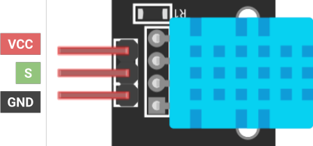

Project 1
LED There Be Light
By Benjamen Bielecki
Overview
Just as the newborn programmer prints “Hello World” to the console, the novice electrical engineer must light an LED. For your first project, you will prototype a basic LED circuit on a breadboard. Then, you will solder it onto a perfboard.
Requirements
- The circuit must work as implied by the schematic: A switch will toggle the LED ON and OFF.
- The circuit must be soldered to the protoboard.
- The LED must be brightly lit when toggled ON. A dim LED indicates poor soldering or an incorrect resistor value.
- The LED must be completely dark when toggled OFF.
Parts
| Part Name | Qty |
|---|---|
| Breadboard | 1 |
| Battery, 9V | 1 |
| 9V Snap Connector | 1 |
| Header, 2.54mm, Female, 1x2 | 2 |
| LED, 3.2V | 1 |
| Slide Switch | 1 |
| Resistor, ?Ω | 1 |
| Protoboard | 1 |
Schematics

Concepts: Breadboards
 You will use a breadboard to prototype your circuits. Inside the breadboard are
conductive metal strips.
You will use a breadboard to prototype your circuits. Inside the breadboard are
conductive metal strips.
When you insert components into holes of the same strip, current can flow between those components.
Closely follow the illustrations below to understand how current travels through the breadboard.


Remember to place a component’s terminals on different strips. If both terminals sit on
the same strip, current will not flow properly through the component.
Concepts: Ohm’s Law
V = IR
Ohm’s Law relates the voltage (V), current (I), and resistance (R)
in a circuit. Suppose we hold the voltage at a constant value: As the current increases, resistance in the circuit
decreases. In the opposite case, as current decreases, resistance increases.
We will use the formula to calculate the proper resistor value for our circuit. With a resistance too low, the
components break under high current. However, a resistance too high limits the current so that no component is
sufficiently powered.
Admittedly, there is plenty more nuance to this topic: we will eventually distinguish between current-driven and
voltage-driven electronics, which exhibit different characteristics under changing voltage and current conditions.
Concepts: Resistor
A resistor is a component that reduces the current flow. It has no polarity, meaning that its orientation in a circuit has no effect on the circuit. The ability of a resistor to limit current flow is measured in ohms (Ω). The value of a resistor is determined by the color and number of bands appearing on it. Different resistors have a different count of bands, so let’s take, for example, the four-band resistor:

The first two bands (red and black) represent the digits of the resistor
value (resistance). The value of each digit can be decoded on the chart below. In our case, we find the digits are
20. The next band (yellow) represents a
multiplier to be multiplied by the digits. Looking at the chart again, we can see that the multiplier is
104. The last band represents the tolerance, the variance
of the true resistance compared to the one described by the bands. In our case, gold has a tolerance of
±5%.
Putting it all together, we get the value 20 x 104 ±5% Ω, which is identified as a 200KΩ resistor.

DHT11 Pinout

To the left is the pinout of the DHT11.
The GND and VCC pins power the radio
module.
Note that the VCC pin takes a voltage between 3.3 and 5V, but to keep it
simple, connect it to the VCC pin of
the Arduino board.
The third and final pin is S. This line carries the communication between the Arduino and sensor. It should be connected to a digital pin of the Arduino board.
Using the DHT11 Library
Writing the code for the DHT11 is almost as easy as wiring it! You can download the library here. Make sure to include the header file:
#include <dht11.h>
At the core of this library is the dht11 class, which you will instantiate as an object and use to read data from the sensor.
Create an object as follows, declaring it in the global scope.
dht11 weatherSensor;
To collect data from the sensor, call the read() function
from the dht11 object.
Make sure to pass the digital pin of the S line as the argument.
weatherSensor.read(int pin);
After you call read(), you may access the temperature and
humidity values using the following dht11 member variables. These values are the int type. Temperature
is Celsius.
weatherSensor.temperature
weatherSensor.humidity
At this point, you can print the values to the serial monitor or use it however else you please.
Let’s see all of the code in action!
#include <LiquidCrystal_I2C.h>
LiquidCrystal_I2C lcd(0x27, 16, 2);
void setup()
{
lcd.init(); // initialize the lcd
lcd.backlight();
}
void loop()
{
lcd.clear(); // clear display
lcd.setCursor(0, 0); // move cursor to (0, 0)
lcd.print("Hello"); // print message at (0, 0)
lcd.setCursor(2, 1); // move cursor to (2, 1)
lcd.print("World"); // print message at (2, 1)
delay(1000); // delay between each print to LCD
}Arduino Nano Pinout
Thinking about using a pin but you don’t know what it does? Refer to the Arduino Nano pinout diagram, or
scroll further to find the full datasheet.
~ represents pins that are PWM capable.

Instructions
Checkpoint 1
- Using the provided datasheet, find the forward voltage of the LED and the continuous forward current through the LED.
- Determine the voltage drop through the resistor by subtracting the battery's voltage from the forward voltage of the LED.
-
Calculate the resistor value using its voltage drop and the maximum current with Ohm's Law.
Checkpoint 2
- Now that you have the correct resistor value, build the circuit on the breadboard, using the schematic as reference.
-
(Optional) Test the circuit with different valued resistors, and observe how the brightness of the LED changes. Keep in
mind that a low resistance will burn out the LED.
Checkpoint 3
-
Once you have successfully prototyped the circuit on your breadboard, build the same circuit on the protoboard. Solder
with care!
Do not solder the 9V snap connector to the protoboard. Instead, solder the female 1x2 header to the board. The snap connector will be inserted into the header’s pins.
Deliverables (Enrolled Students Only)
Students enrolled in the course must submit the following deliverables to the corresponding Canvas course assignment:
-
Submit a video of your soldered protoboard to the Project 1 Canvas assignment.
The video should demonstrate the switch in both states (ON and OFF)